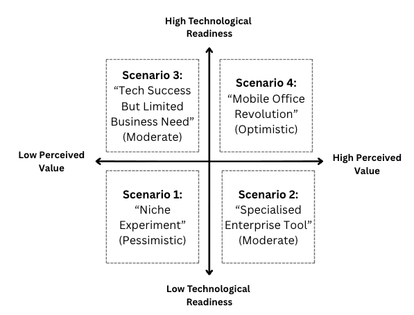
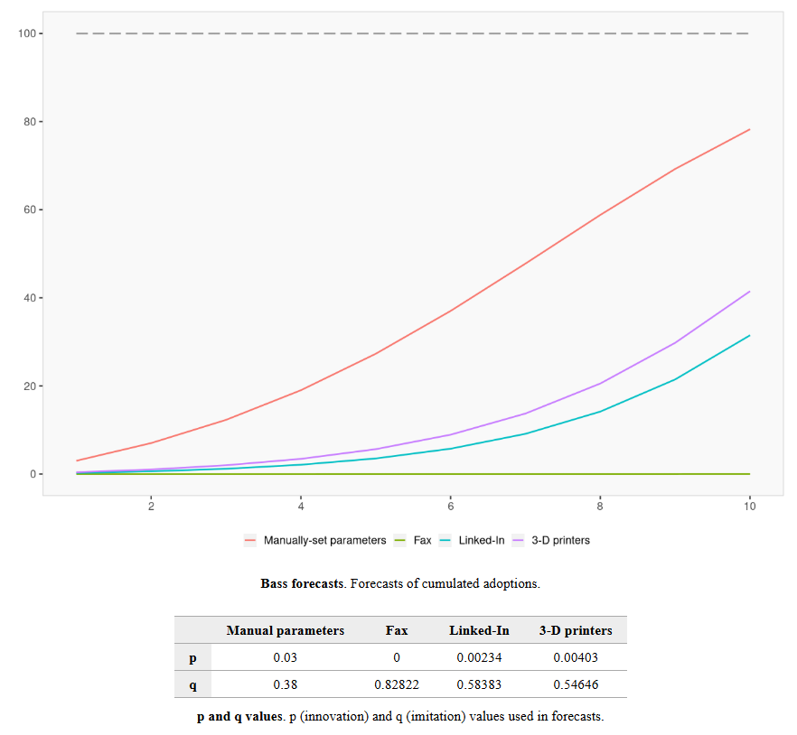
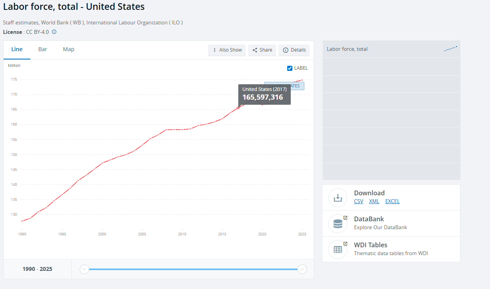
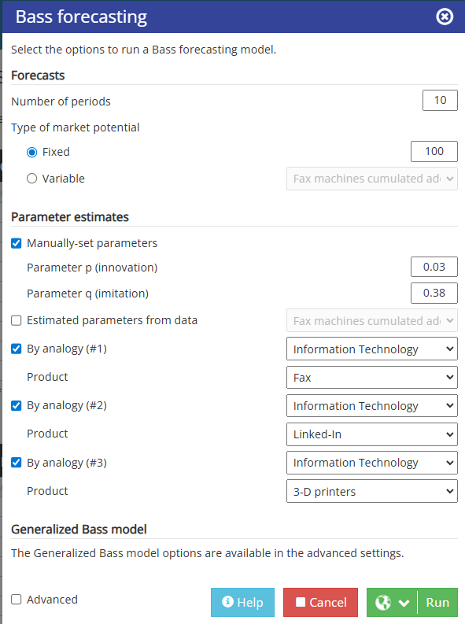
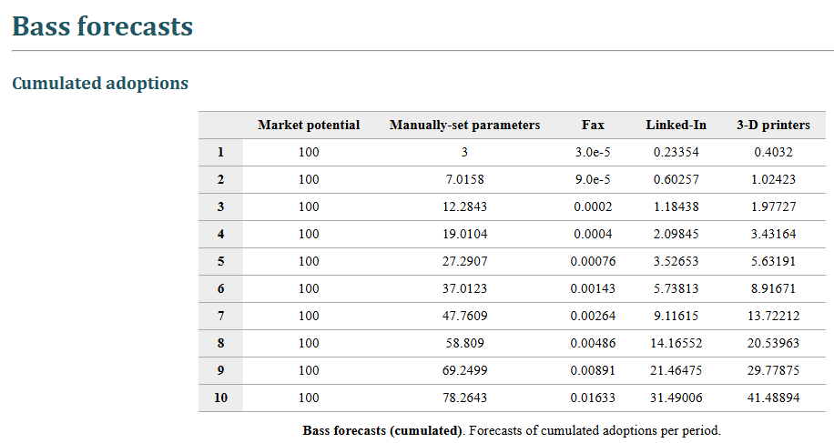

Structured product-strategy analysis for enterprise telepresence adoption under market and technology uncertainty.
Sanitized Research Note
Telepresence Market Adoption Strategy
A public-safe business analytics case note on robotic telepresence adoption, market sizing, diffusion modelling, and enterprise scenario planning.
Domain: Business Analytics
Focus: Market Adoption
Year: 2026
Status: Paraphrased Summary
Fast Scan
What this report proves
A recruiter-readable summary of the market-strategy signal, analytical methods, evidence, and public-data boundary.
TAM framing, Bass diffusion logic, adoption scenarios, enterprise segmentation, strategic-fit assessment, and go-to-market recommendations.
Market-sizing logic, scenario matrix, adoption drivers, decision criteria, and recommendation path from the sanitized case analysis.
No group-member names, academic identifiers, submission metadata, private notes, or unsupported proprietary claims are published.
PII-Safe Publication Note
This report is a rewritten portfolio version of a group case analysis. It removes personal names, academic identifiers, submission metadata, and original formatting. The public version focuses on the analytical logic and recommendations.
Executive Summary
The case examined how enterprise telepresence could develop after early excitement around remote work, robotics, and workplace collaboration. The analysis used market sizing, Bass diffusion framing, and scenario planning to evaluate whether robotic telepresence would become a durable enterprise tool or remain a niche hardware category.
The strongest recommendation is to position telepresence as an integrated productivity and operations product, not as a standalone robot purchase. Adoption is more plausible when the device is bundled with cloud collaboration, scheduling, security, analytics, and clear enterprise use cases.
Field Note
This project taught me to separate market excitement from adoption mechanics. The stronger argument came from mapping buyer value, readiness, and workflow integration rather than treating the hardware category as the strategy.
Portfolio Signal Snapshot
This report is positioned for product strategy, market intelligence, analytics consulting, and venture analysis. It demonstrates how to turn uncertain technology adoption into structured assumptions, scenarios, and practical recommendations.
Role Signal
Market adoption analyst for enterprise telepresence strategy
Methods
TAM framing, Bass diffusion, scenario planning, strategic fit
Decision Lens
Technology readiness, buyer value, workflow integration
Business Value
Converts market uncertainty into staged partnership strategy
Market Sizing
Bass Diffusion
Scenario Planning
TAM Analysis
Enterprise Strategy
Technology Adoption
Forecasting
Product Strategy
Go-to-Market
Business Analytics
Problem Context
Telepresence robots promise remote physical presence, but adoption depends on more than technical novelty. Enterprises care about reliability, security, integration cost, user comfort, facilities constraints, and measurable productivity gains. The market therefore requires both technology readiness and perceived business value.
Technology Readiness
Connectivity, battery life, camera quality, mobility, and collision avoidance all affect whether users trust the device.
Enterprise Value
Adoption improves when buyers can connect the product to travel reduction, site coverage, specialist access, or hybrid work.
Integration Burden
Hardware that requires separate workflows is easier to trial than to scale across a large organization.
Analytical Objectives
- Estimate the plausible addressable market for enterprise telepresence using a top-down segmentation approach.
- Use diffusion modelling to reason about adoption speed, innovators, imitators, and market saturation.
- Compare optimistic, pessimistic, and moderate adoption scenarios.
- Translate market analysis into product and go-to-market recommendations.
- Present the case without publishing the raw group report or identifying information.
Market-Sizing Logic
A practical top-down estimate starts with a broad workforce or enterprise base, narrows to roles with remote-collaboration needs, narrows again to organizations with distributed sites, and then applies adoption constraints such as budget, IT readiness, and operational fit. This avoids treating every remote worker as an immediate buyer.
Better portfolio wording: State the sizing method and assumptions rather than
presenting a single number as certain. Scenario ranges are more credible than false precision.
Sanitized Scenario Matrix
The original report used a 2x2 matrix with technological readiness and perceived enterprise value as the axes. The recreated version below keeps the strategic logic without embedding the raw report figure.
Robotic Telepresence Adoption Scenarios
Vertical axis: perceived enterprise value. Horizontal axis: technology readiness.
High Value / Low Readiness
Strong use-case pull, but unreliable navigation, connectivity, or device operations constrain
rollout.
High Value / High Readiness
Most attractive path: telepresence becomes a credible enterprise collaboration and site
operations tool.
Low Value / Low Readiness
Pessimistic path: the category remains experimental because cheaper video tools are good
enough.
Low Value / High Readiness
Functional hardware exists, but buyers lack a compelling reason to change workflows or
justify procurement.
Original Figure Gallery
These figures are included because they are compact, intuitive, and directly support the market-adoption argument. They are paired with citations rather than presented as standalone evidence.





Diffusion Model Framing
The Bass model is useful for this case because adoption depends on both innovation effects and imitation effects. Early buyers may adopt because the technology solves a specific operational problem. Later buyers are more likely to follow if they observe peer usage, integration maturity, and clearer proof of return on investment.
- Innovation effect: Early adoption driven by novel use cases, executive interest, distributed teams, or specialized site operations.
- Imitation effect: Later adoption driven by case studies, platform integrations, lower procurement risk, and clearer workplace norms.
- Market ceiling: Long-run adoption constrained by physical office layouts, security, device cost, maintenance, and competing collaboration tools.
Bass Forecast Technical Notes
The appendix referenced a Bass diffusion forecast and supporting labour-force inputs. The public portfolio version keeps the modelling interpretation rather than publishing raw appendix screenshots.
Decision Framework
My strategic recommendation was not to treat telepresence as a pure hardware category. The stronger approach is to evaluate adoption through use-case fit, integration leverage, and evidence from pilots.
| Decision Area | Risky Interpretation | Professional Framing | Reasoning |
|---|---|---|---|
| Market size | Treat every remote worker as addressable | Narrow to roles where remote physical presence matters | Prevents inflated TAM and makes the forecast more credible. |
| Adoption path | Assume smooth mainstream adoption | Use optimistic, moderate, and pessimistic scenarios | Reflects uncertainty in buyer behavior, reliability, cost, and substitutes. |
| Product positioning | Sell telepresence as standalone hardware | Bundle with collaboration, identity, analytics, and device management | Enterprise buyers prefer integrated workflows and lower operational friction. |
| Investment posture | Acquire before demand is proven | Stage partnership depth based on pilot evidence | Limits downside while preserving strategic optionality. |
Qualitative Strategy Priority Chart
Workflow Integration
Critical
Use-Case Specificity
High
Forecast Discipline
High
Hardware Novelty
Secondary
Pilot Evidence
High
Scenario Analysis
Optimistic Scenario
Reliable hardware, strong cloud integration, visible productivity gains, and hybrid-work demand create faster enterprise adoption.
Moderate Scenario
Adoption grows in specific verticals such as site inspection, healthcare operations, education, and distributed facilities.
Pessimistic Scenario
The product remains niche because video conferencing is cheaper, easier to deploy, and already embedded in daily workflows.
Recommendations
- Bundle telepresence with enterprise collaboration suites so the product feels like an extension of existing work patterns.
- Target high-value use cases where mobility and remote physical presence matter, rather than generic meetings.
- Provide administrative controls for security, fleet management, scheduling, device permissions, and usage analytics.
- Use pilot programs with clear success metrics, such as travel avoided, response time, expert coverage, or facility inspection throughput.
- Reduce friction through service bundles that include setup, support, maintenance, and integration.
Selected Sources From Original Report
The original case study cited behavioral-intention theory, social innovation, diffusion-model research, a telepresence case dataset, and public labour-force inputs. The portfolio version lists the relevant source trail without reproducing appendix screenshots.
Ajzen (1991), The
Theory of Planned Behavior.
Cajaiba-Santana (2014), Social Innovation:
Moving the Field Forward.
Sheeran (2002), Intention-Behavior
Relations: A Conceptual and Empirical Review.
Sultan, Farley, and Lehmann (1990), A Meta-Analysis of
Applications of Diffusion Models.
Rangaswamy (2019), Forecasting Adoption of Telepresence Robot
Technology.
World Bank, Labor Force,
Total - United States.
Limitations
- Diffusion models simplify complex buyer behavior and should be interpreted as scenario tools, not precise forecasts.
- Market sizing is sensitive to assumptions about remote-work prevalence, enterprise budgets, and vertical-specific demand.
- Competitive pressure from standard video conferencing can cap adoption unless telepresence solves a clearly different problem.
- The public version does not publish the original group report or identifying submission details.
Recruiter Signal
This report demonstrates business analytics judgment: framing uncertain markets, making assumptions explicit, using diffusion models carefully, and converting analysis into strategy. It is relevant for product strategy, market intelligence, venture analysis, and analytics consulting.
Market Sizing
Bass Model
Scenario Planning
Enterprise Strategy
Forecasting
Business Analytics